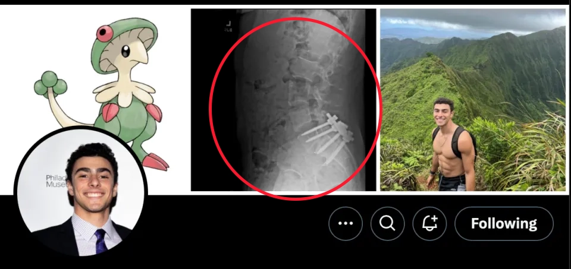

路易吉·尼古拉斯·曼吉奥内（Luigi Nicholas Mangione），1998年5月6日出生于马里兰州
意大利裔美国软件工程师 ，毕业于宾夕法尼亚大学，先后获得工程学学士和硕士学位
家庭显赫，为巴尔的摩的房地产开发商尼古拉斯·曼吉奥尼（Nicholas Mangione）之孙
然而路易吉天生患有脊柱畸形，后又在一次冲浪中背部受伤（图为路易吉的推特账号，首页图片展示了其脊柱手术的情况）
其在2023年进行了一场脊椎融合手术，但术后恢复效果可能不太理想，致使他的心理状态遭到了极大的冲击。
手术后，路易吉回到了此前居住的夏威夷，但在2024年春天后逐渐停止了与大多数亲友之间的联系。